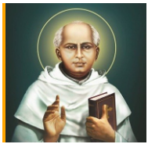

Rajagiri College of Social Sciences (RCSS), together with its sister educational concerns, owes its existence to the CMI (Carmelites of Mary Immaculate) fathers, the first ever indigenous religious congregation for men in the Syrian Catholic tradition of Christianity in India. The CMIs drawing inspiration from their founding father St. Kuriakose Elias Chavara, a great visionary, reformer and religious leader of the 19th century, have proven themselves worthy of that heritage in the field of education by establishing institutions of excellence imparting quality education, across the length and breadth of the State, and in various parts of India. At present, the CMIs manage a network of more than 800 Schools, 13 Special Schools, 41 Arts, Science, Commerce & Physical Education Colleges, 10 B.Ed. Colleges, 4 Nursing Colleges, 4 Engineering Colleges, one Medical College, one University, 3 Law Colleges, 6 Research Centres, 7 Technical Institutes, 41 Hostels & Boarding Houses, 17 Cultural Centres, 2 Super Speciality Hospitals and 114 Non-formal Education Centres.
Rajagiri College of Social Sciences (Autonomous) was established as a result of the indefatigable industry and foresight of the CMI. The various axioms of the insitution maintain the axiomatic spirit of Rajagiri - ‘Relentlessly Towards Excellence’.
Rajagiri has successfully established and maintained the apt ambience for learning and the highest level of academic performance by providing state-of-the-art infrastructure and facilities in these institutions. International partnerships have been established with reputed Management and Social Work institutions across the globe. This allows the College, the faculty and the students to stay abreast of the constant changes occurring as Rajagiri is becoming truly global, with its graduates being placed and working around the world.
Rajagiri College of Social Sciences (RCSS) is the eldest child of Rajagiri Vidyapeetham (Rajagiri group of educational institutions). It is located on two picturesque locations in Kochi, in the state of Kerala. RCSS primarily located at Kalamassery and the management programs singularly known as RCBS at Kakkanad, which is hardly 10 KMs away. RAJAGIRI literally means “The hill of the King” and derivatively it refers to the hillock where Jesus Christ is accepted as the King or the model, as the human embodiment of the virtues of love, truth and justice.
The College had its origin as pioneers in professional social work education starting with a Diploma in social service way back in 1955 and adding on Masters in Social Work (MSW), the first of its kind in Kerala State and one of the very few in South India. The specialization PM & IR then offered in MSW programme gave way for additional Programme -Masters in Personnel Management & Industrial Relations which is the present MAHRM offered at the college.
The College then started under the University of Madras, later came under the University of Kerala and after 1986 affiliated to MG University, Kottayam. Over the years the College started expanding its horizons to a range of multidisciplinary programmes from undergraduate to doctoral levels, including Computer Science, Psychology, Library & Information Sciences, Commerce, Statistics and Management among others. MCA, MBA, IMCA, IMBA, BBA, BCA, PGDM & FPM programmes at Rajagiri are approved by AICTE (All India Council for Technical Education). The College is presently offering 20 Programmes under 10 Departments.
Rajagiri Centre for Business Studies (RCBS) is a brand owned by the College representing all the management Programmes of the College.
The spirit behind Rajagiri College can be caught in the catchphrase: “Rajagiri, Relentlessly Towards Excellence” and it is enshrined in the vision of the College.